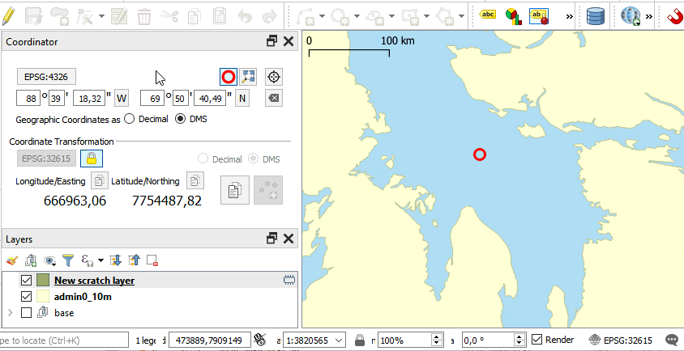

Coordinators basic function is to just transform input coordinates into output coordinates through a — you guessed it — coordinate transformation. The coordinator panel is structured in two sections: The upper section represents the input, the lower the output of the current coordinate transformation.
The Input Coordinate Reference System (CRS) can be selected arbitrarily while the Output CRS is connected with the currently active layer by default. If the user selects another layer, the Output CRS changes accordingly. This behavior can be changed by toggling the lock button in the lower section — if unlocked the output CRS can also be selected independently from the active layer.
There are two ways to enter new coordinates into the transformation: 1. by entering manually into the panel or 2. by capturing the coordinates with the picker from the map
Any input is transformed instantly.
Besides decimal coordinates both the input and the output support geographic coordinates also in Degree/Minute/Seconds units (DMS) by selecting the appropriate option for the corresponding section. If in DMS mode, buttons to switch the coordinate’s hemisphere (North/South or East/West) become active.
All the input can be cleared by pressing the corresponding button.
The currently entered coordinate is marked on the main canvas with a circle. The marker can be hidden by toggling the corresponding button. If the coordinate is currently not within the current main canvas extent, a warning is shown.
By clicking the “Pan Map” button, the map is centered on the current coordinate. The map’s scale is not changed.
The input coordinate can be captured from the map canvas with the picker tool activated with the corresponding button. The input CRS does not have to be in the CRS of the map or currently active layer.
The output of the transformation displayed in the lower section can be copied to the clipboard as a whole with the button to the right. In this case both coordinate components are separated by a tab for easy pasting into spreadsheet applications.
With the smaller copy buttons above the output coordinates components, only the respective value is copied to clipboard.
Coordinator provides ways to create features based on the currently entered coordinates. The corresponding button in the lower section is enabled when the user has a vector opened for editing and is currently adding a feature and valid coordinates are entered as input.
Note that neither CRS of the transformation needs to be in the layer’s CRS.

All input fields support stepwise change by using the directional keys on the keyboard or the mouse wheel. For example you can increment an input field by one by pressing the “up"-arrow or by scrolling up while that field is active.
Pressing ‘-’ (minus-key) in an input field switches the hemisphere of the coordinate if the current input CRS is a geographic one.
Pressing Enter/Return in any input field performs a coordinate digitization if currently possible. It’s therefore possible to digitize a bunch of coordinates manually, for example when reading from unstructured coordinate lists.
Tests can be run with the QGIS python console or in a terminal with the appropriate environment ( e.g. PYTHONPATH, QT plugin path, QGISPREFIXPATH …).
to execute inside QGIS, open Plugins -> Python console… and enter ~~~ import coordinator.test coordinator.test.run_all() ~~~
to execute in a terminal make sure the environment variables are set correctly:
PATH (should prefer the QGIS installation binaries, especially python)QGIS_PREFIX_PATH (usually <QGIS installation path>/apps/qgis)QT_PLUGIN_PATH: QGIS_PREFIX_PATH + /../Qt5/pluginsPYTHONPATH (usually QGIS_PREFIX_PATH + /python and + /../Qt5/python and the
QGIS profile plugin folder )then execute ~~~ python -m coordinator.test ~~~
git commit: d14b207